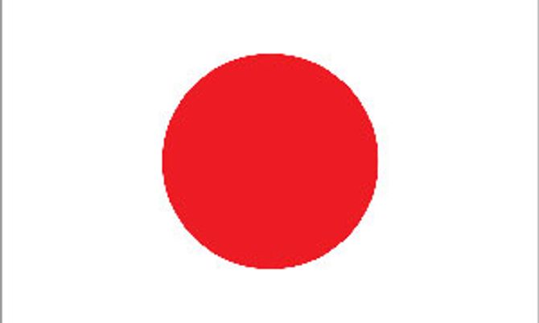

คำยืมจากภาษาญี่ปุ่น

การเข้ามาของคำยืมภาษาญี่ปุ่นในภาษาไทยมีลักษณะเฉพาะตัวที่แตกต่างจากภาษาอื่น เนื่องจากไม่ได้เกิดจากสงครามหรือการย้ายถิ่นฐานครั้งใหญ่ในอดีต หากแต่เป็นผลมาจาก "คลื่นวัฒนธรรม" (Soft Power) และความเจริญก้าวหน้าทางเศรษฐกิจและการท่องเที่ยวในยุคโลกาภิวัตน์ คนไทยรับคำภาษาญี่ปุ่นเข้ามาผ่านการบริโภคอาหาร แฟชั่น การดูแอนิเมชัน และการอ่านมังงะ โดยลักษณะการยืมมักเป็นการทับศัพท์ตามเสียงดั้งเดิมตรง ๆ โดยไม่มีการเปลี่ยนรูปคำ เพื่อรักษาอัตลักษณ์และอรรถรสทางวัฒนธรรมของญี่ปุ่นเอาไว้อย่างครบถ้วน ในปัจจุบันเราสามารถพบเห็นคำยืมภาษาญี่ปุ่นได้ทั่วไปในหมวดอาหารยอดนิยม เช่น ซูชิ ราเมง ชาบู วาซาบิ และ เทมปุระ ซึ่งกลายเป็นอาหารจานโปรดในวิถีชีวิตของคนเมือง นอกจากนี้ยังมีคำที่เกี่ยวข้องกับวัฒนธรรมและความบันเทิง เช่น คาราโอเกะ มังงะ กิโมโน และกีฬาต่อสู้อย่าง คาราเต้ และ ยูโด คำยืมภาษาญี่ปุ่นจึงทำหน้าที่เป็นสะพานเชื่อมโยงรสนิยมของคนรุ่นใหม่ และสะท้อนให้เห็นถึงความเปิดกว้างของภาษาไทยที่พร้อมจะโอกรับกระแสวัฒนธรรมร่วมสมัยจากภายนอกอยู่เสมอ